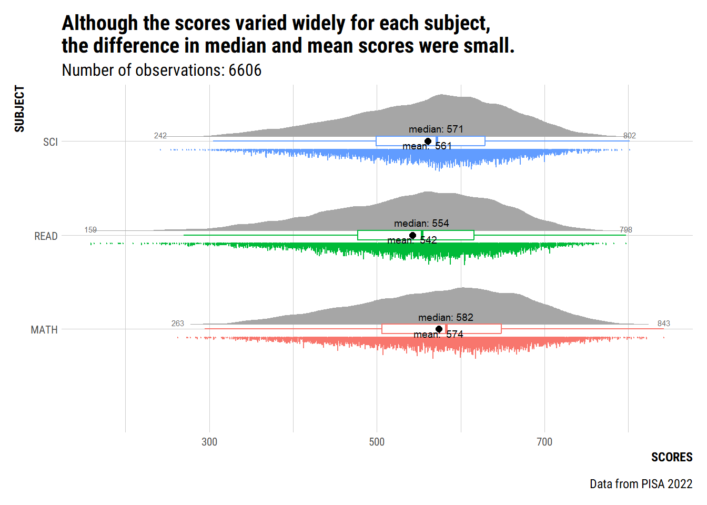
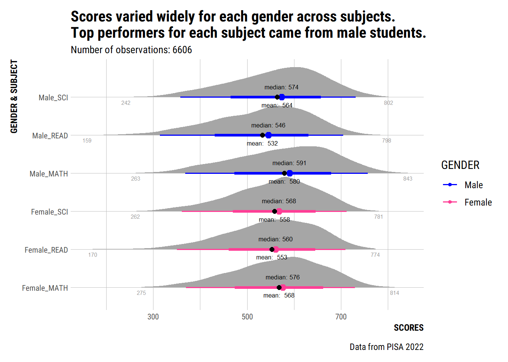
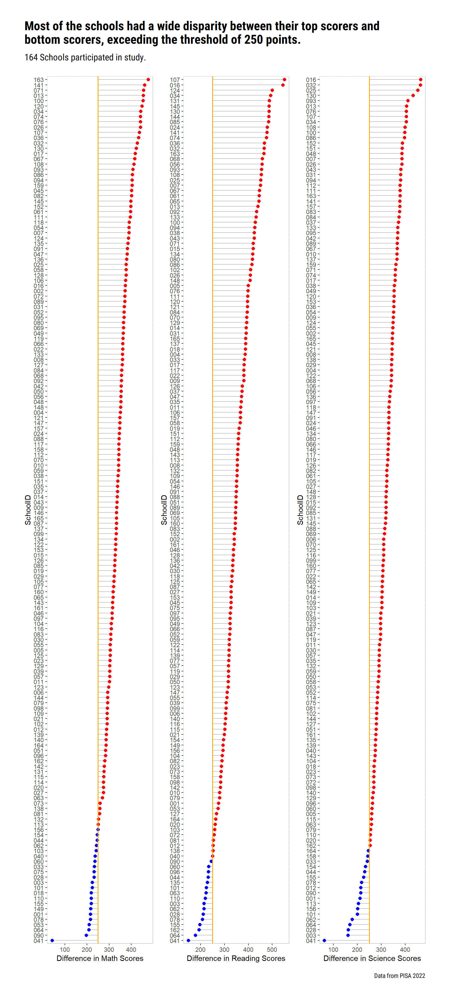

Show the code
pacman::p_load(tidyverse, haven, patchwork, ggrepel, ggdist, ggridges, knitr, hrbrthemes)In this take-home exercise, I will be using the data visualisation design principles and best practices learnt in ISSS608 Lesson 1 and 2 to improve on my peer’s visualisations.
First, let us ensure that the required R packages have been installed and import the relevant data for this exercise.
For this exercise, we will be using the following packages:
tidyverse : to load the core tidyverse packages, which includes ggplot2 and dplyr.
patchwork: to create composition of ggplot2 plots using arithmetic operators.
ggrepel: to repel overlapping text labels away from each other.
ggdist: provides stats and geoms for visualising distributions and uncertainty.
ggridges: provides geoms to plot ridgeline plots, which are partially overlapping line plots that create the impression of a mountain range.
knitr: provides a general-purpose tool for dynamic report generation in R. We will use this to mainly help us generate simple tables.
The code chunk below uses p_load() of pacman package to check if the abovementioned packages are installed in the computer. If they are, they will be launched in R. Otherwise, pacman will install the relevant packages before launching them.
pacman::p_load(tidyverse, haven, patchwork, ggrepel, ggdist, ggridges, knitr, hrbrthemes)For this exercise, we are using PISA 2022 database’s student questionnaire data file, which is the same dataset as Take-home exercise 1. As we have already filtered out the PISA data from Singapore and saved it in rds file previously in Take-home exercise 1, let us import the rds file using the following code chunk.
stu_qqq_SG <- read_rds("data/stu_qqq_SG.rds")Before I can critique and remake my peer’s charts, I followed the following data preparation steps taken by my peer.
stu_qqq_SG_filtered <- stu_qqq_SG %>%
select_if(function(x) !all(x == x[1]))
stu_qqq_SG_filtered <- stu_qqq_SG_filtered %>%
mutate(
MATH = rowMeans(select(., PV1MATH:PV10MATH), na.rm = TRUE),
READ = rowMeans(select(., PV1READ:PV10READ), na.rm = TRUE),
SCI = rowMeans(select(., PV1SCIE:PV10SCIE), na.rm = TRUE)
)
stu_qqq_SG_filtered <- stu_qqq_SG_filtered %>%
mutate(Gender = ifelse(ST004D01T == 1, "Female", "Male"))
stu_qqq_SG_filtered <- stu_qqq_SG_filtered %>%
mutate(CNTSCHID = as.character(CNTSCHID))As the charts that we will be re-creating only uses the selected columns, I also drop the columns that we will not be using for this exercise using the following code chunk.
stu <- stu_qqq_SG_filtered %>%
select(CNTSTUID,CNTSCHID, Gender, MATH, READ, SCI, ESCS)The following charts were from the original submission.
What the message is
Before I critique, I shall attempt to deduce the author’s message for this chart so that we can make recommendations to improve the chart based on the intended message.
I think the author was trying to find out if there was any difference in student scores between subjects since a notched box plot was plotted for each subject’s scores.
Aesthetics
The title could be more informative. We can also add a subtitle to provide more information on the sample size.
We can put the 3 boxplots side by side for easy comparison.
Clarity
The author used notched box plots to give a summary of the minimum, maximum, median and interquartile range of Math, Reading and Science scores for Singapore students. The box plots also indicated “outliers” with those black dots at the end. However, since the message was on the difference in scores and not on the outliers, we can choose to remove these outliers to reduce ink.
In the original chart the notches of the box plots were not very obvious. This could be due to the size of the boxplots being very wide, making it hard to see the notches. Also, these charts were placed in different tabs, making it hard for readers to see if there was a difference in scores between subjects. It might be easier for readers to compare if these plots were placed side by side.
In the original chart, there was a red dot for the mean scores of each subject. However, there was no text labels so the readers have to try to interpret and gauge the mean value based on the y-axis. It would be more useful if it has text annotation so that readers can easily read off the mean value.
One of the pitfalls of box plot is that it does not show the distribution of the data well. It hides multimodality and other features of distributions. Hence, we can also consider alternatives such as violin plot.
As having a clear message for the plot was the first step of of data visualisation design process, I shall assume that the author wanted to show if there was any difference in scores between the different subjects (Maths, Reading and Science) among Singapore students.
If we want to show difference in scores between subjects, we can consider the following plots:

Firstly, for all the options, I proposed to put the scores for all 3 subjects side by side. Also, rather that stitching 3 different plots together (i.e. 1 plot for 1 subject) using patchwork, I suggested to put all three plots together so that they can be on the same axes and easier for comparison.
There are pros and cons for the above 3 options:
Violin plot: shows the distribution and summary stats of the data. However, certain parts of it are a bit redundant because half of the violin would already reveal the distribution. So a violin plot might not be that efficient use of space.
Ridge plot: This brings us to ridge plot, which uses “half” of the violin plot and we rotated the “half-violin” to be horizontal, giving us the image of “ridges”. Ridge plot also can show distribution of the data and makes good use of the space. We can add annotations (e.g. lines and texts) to show the median and mean. However, ridge plot might be better for situations where we have medium to high number of groups to represent. In this case, we have less than 5 groups, so we might want to consider other distribution plots.
Raincloud plot: We can further enhance the ridge plot and make it into a raincloud plot by adding boxplot and dotplot. This will also show us the distribution and summary statistics of the data.
After weighing the above pros and cons, I decided to change the box plots to raincloud plot. Below is how I imagined the plot to look like with a title and subtitle:

We will first prepare the data by selecting the columns we need (i.e., student ID, Math, Reading and Science scores) then pivot the table longer using pivot_longer() so that we can have all three subjects in 1 chart.
stu1 <- stu %>%
select(CNTSTUID, MATH, READ, SCI) %>%
pivot_longer(!CNTSTUID, names_to = "Subject")Using the data prepared stu1, we will plot the raincloud plot using the following code chunk.
ggplot(stu1,
aes(x = Subject,
y = value,
color = Subject)) +
stat_halfeye(adjust = 0.5,
width = 0.5,
justification = -0.1,
.width = 0,
point_color = NA) +
geom_boxplot(width = 0.1, outlier.shape = NA) +
stat_dots(side = "left",
justification = 1.1,
binwidth = 0.5,
dotsize = 2) +
coord_flip() + theme_minimal()+
stat_summary(fun = median, geom = "text", aes(label = paste("median:", round(after_stat(y), 0))),
position = position_nudge(x=0.05), vjust=-0.5, size = 2.5, color = "black")+
stat_summary(fun=mean, geom ="text", aes(label = paste("mean: ", round(after_stat(y), 0))), position = position_nudge(x = 0.25), vjust = 4, color= "black", size = 2.5)+
stat_summary(fun = mean, geom = "point", shape = 16, size = 2, color = "black",
position = position_nudge(x = 0.0)) +
stat_summary(fun = min, geom = "text", aes(label = paste(round(after_stat(y), 0))),
position = position_nudge(y=-0.25), vjust=-0.5, size = 2, color = "grey40")+
stat_summary(fun = max, geom = "text", aes(label = paste(round(after_stat(y), 0))),
position = position_nudge(y=-0.25), vjust=-0.5, size = 2, color = "grey40")+
labs(title = "Although the scores varied widely for each subject, \nthe difference in median and mean scores were small.", subtitle = "Number of observations: 6606", caption = "Data from PISA 2022") +
xlab("SUBJECT") +
ylab("SCORES") +
theme_ipsum_rc(plot_title_size = 15, plot_title_margin=4, subtitle_size=12, subtitle_margin=4, axis_text_size=8, axis_title_face= "bold", plot_margin = margin(10,10,10,10)) +
theme(legend.position = "none") 
The following charts were from the original submission.
What the message is
Aesthetics
The title could be more informative. We can also add a subtitle to provide information on the sample size.
We can put the 3 boxplots side by side for easy comparison.
Clarity
Notched boxplots were used to display the difference in subject scores between gender.
Similar to the first chart, the notches of the box plots were not obvious, possibly due to the size of the boxplots being very wide. Also, these charts were in different tabs, making it hard for readers to see if there was a difference in subject scores between genders. It would be easier for readers to compare if these plots were placed side by side.
There was a red dot on each boxplot to indicate the mean scores of each subject and gender but it would be more useful if it has text annotation so that readers can easily read off the mean value.
There are several options to display if there was any difference in scores. I thought we can use either:
Option 1: use ridge plot to plot all the subject scores for both gender plotted on 1 chart,
Option 2: use ridge plot and box plot (i.e. raincloud plot without the “rain”) to display the scores between genders for each subject in separate charts, then make use of patchwork to combine the 3 charts into 1 for ease of comparison.

I suggested ridge plot and put all 6 subject scores (i.e. 3 subjects for each gender) into 1 plot so that we can easily compare differences between gender and also within gender. This chart would easily allow us to know which gender performed well for each subject. However, ridge plot does not have information on the summary statistics so I came up with option 2 (i.e. ridge plot and box plot) since ggridges allow us to have such plots too.
For option 2, I separated the charts by subjects to test out if it can display the same message effectively. I realised that having a separate chart for each subject helps us to know which gender does well for a particular subject, but it does not allow us to have an “overview” which gender performed better overall.
I did not suggest raincloud plot because if there are 6 subject scores in 1 plot, it might be too messy to have so many dots on the plot.
There are pros and cons for each option.
For option 1, having the scores for all subjects and gender in 1 plot means that we will have 6 distributions in 1 plot. It might be easy to pick out any obvious differences. However it might be too overwhelming since there are 6 “ridges” to look and compare at 1 shot, or some readers might not know where to start. So if we use option 1, we would have to have clear annotations and titles to guide the readers.
For option 2, it splits the plots by subject so that we can see if there are any differences in scores between gender for each subject. However, we might not be able easily compare differences in scores between subject for each gender (e.g. to find out if female students performed better in Reading as opposed to Maths).
After weighing the above pros and cons, I decided to change the box plots to combine option 1 and 2 ideas. So we will plot ridge plots and box plots for gender and subjects into 1 plot. This is how it looks like:

Let us prepare the data for this chart. We will first select the columns that we want, then pivot_longer() so that we can plot all the subjects scores for both gender into 1 plot. We then concatenated the Gender and Subject columns into 1 column so that we can use this new column Gen_Sub to lcreate a chart for each Gender’s Subject.
stu$CNTSTUID <- as.factor(stu$CNTSTUID)
stu2 <- stu %>%
select(CNTSTUID, Gender, MATH, READ, SCI) %>%
pivot_longer(cols = MATH:SCI) %>%
rename("Subject" = "name",
"Scores" = "value")
stu3 <- stu2 %>%
mutate(GENDER = Gender) %>%
unite(Gen_Sub, c(Gender, Subject))
stu3$GENDER <- factor(stu3$GENDER, levels = c("Male", "Female"))The following code chunk plots out the
ggplot(stu3,
aes(x = Scores,
y = Gen_Sub,
color = GENDER)) +
stat_halfeye(expand = TRUE) +
stat_summary(fun = median, geom = "text", aes(label = paste("median:", round(after_stat(x), 0))),
position = position_nudge(y=0.15), vjust=-0.5, size = 2.3, color = "black")+
stat_summary(fun=mean, geom ="text", aes(label = paste("mean: ", round(after_stat(x), 0))),
position = position_nudge(y =-0.2), vjust = 0.5, color= "black", size = 2.3)+
stat_summary(fun = mean, geom = "point", shape = 16, size = 2, color = "black",
position = position_nudge(x = 0.0)) +
stat_summary(fun = min, geom = "text", aes(label = paste(round(after_stat(x), 0))),
position = position_nudge(y=-0.25), vjust=-0.5, size = 2, color = "grey60")+
stat_summary(fun = max, geom = "text", aes(label = paste(round(after_stat(x), 0))),
position = position_nudge(y=-0.25), vjust=-0.5, size = 2, color = "grey60")+
labs(title = "Scores varied widely for each gender across subjects.\nTop performers for each subject came from male students.", subtitle = "Number of observations: 6606", caption = "Data from PISA 2022") +
ylab("GENDER & SUBJECT") +
xlab("SCORES") +
theme_ipsum_rc(plot_title_size = 15, plot_title_margin=4, subtitle_size=10, subtitle_margin=4, axis_text_size=8, axis_title_face= "bold", grid_col= "grey", plot_margin = margin(10,10,10,10)) +
scale_color_manual(breaks = c("Male", "Female"),
values=c("mediumblue", "violetred1"))
The following charts were from the original submission.
What the message is
Aesthetics
Similarly, the title could be more informative. We can also add a subtitle to provide information on the number of schools. .
We can put the 3 boxplots side by side for easy comparison.
Clarity
In the original work, the students’ scores were averaged to determine the school’s score.
Based on the original author’s interpretation, it seemed that if a school’s score was within the box plot and not an outlier, the author interpreted the school as not having a wide disparity between students.
However, we cannot interpret this way due to how the school’s score was being calculated. Since the school score was derived by averaging the students’ scores and arithmethic averages were affected by extreme values, a school with non-outlier scores does not mean that all its students performed well. This is because the school might have some students with very high scores to make up for the underperforming students.
As such, I suggest to find out the difference between the top score and bottom score for each school. By doing so we get the range of the students’ scores for each school. Then we will compare each school’s range to determine if the school is doing “well”. A wider range means the school’s students had a wider disparity which could warrant further exploration.
In addition, the author chose notched box plots to compare the schools’ scores for different subjects. These plots were also in different tabs, making it hard to compare across subjects.
There was a red dot for the average school score but it would be more useful if it has text annotation so that readers can easily read off the value.
Since the message that I wanted this chart to show was each school’s range of scores for each subject, I have the following suggestions.

For this chart, I think the tricky bit is that there are many schools (~164 schools) to plot out. Initially, I wanted to do a dumbbell plot (option 1) for each school. So each dot would show to top score and bottom score for each school and the line would show the difference between the top scores and bottom scores. But I realised that it would be quite messy and too much information in the chart when there are more than 160 schools to plot out.
Hence, I came up with Options 2 and 3. In options 2 and 3, we can use the height of the bar or ‘lollipop’ would show the difference in the top and bottom scores for each school. We can also add a threshold so that we know which schools have a wide range and which schools have students performing at similar levels.
The difference between barplot and lollipop plot is that lollipop plot uses less ink so people can focus on the height of the “dot”.
After considering the various strengths and weaknesses of the various plots, I decided to remake the original chart into a lollipop plot.
Let us first prepare the data for each subject.
stu_math_min <- stu %>%
group_by(CNTSCHID) %>%
summarise_at(vars(MATH),
list(min_math = min))
stu_math_max <- stu %>%
group_by(CNTSCHID) %>%
summarise_at(vars(MATH),
list(max_math = max))
stu_math <- full_join(stu_math_max, stu_math_min,
by = "CNTSCHID")
stu_math$diff <- stu_math$max_math - stu_math$min_math
stu_math$CNTSCHID <- substr(stu_math$CNTSCHID, 6, 8)
stu_math <- stu_math %>%
mutate(mycolor = ifelse(diff>250, "red", "blue"))%>%
arrange(diff) %>%
mutate(CNTSCHID=factor(CNTSCHID, levels=CNTSCHID))
stu_read_min <- stu %>%
group_by(CNTSCHID) %>%
summarise_at(vars(READ),
list(min_read = min))
stu_read_max <- stu %>%
group_by(CNTSCHID) %>%
summarise_at(vars(READ),
list(max_read = max))
stu_read <- full_join(stu_read_max, stu_read_min,
by = "CNTSCHID")
stu_read$diff <- stu_read$max_read - stu_read$min_read
stu_read$CNTSCHID <- substr(stu_read$CNTSCHID, 6, 8)
stu_read <- stu_read %>%
mutate(mycolor = ifelse(diff>250, "red", "blue"))%>%
arrange(diff) %>%
mutate(CNTSCHID=factor(CNTSCHID, levels=CNTSCHID))
stu_sci_min <- stu %>%
group_by(CNTSCHID) %>%
summarise_at(vars(SCI),
list(min_sci = min))
stu_sci_max <- stu %>%
group_by(CNTSCHID) %>%
summarise_at(vars(SCI),
list(max_sci = max))
stu_sci <- full_join(stu_sci_max, stu_sci_min,
by = "CNTSCHID")
stu_sci$diff <- stu_sci$max_sci - stu_sci$min_sci
stu_sci$CNTSCHID <- substr(stu_sci$CNTSCHID, 6, 8)
stu_sci <- stu_sci %>%
mutate(mycolor = ifelse(diff>250, "red", "blue"))%>%
arrange(diff) %>%
mutate(CNTSCHID=factor(CNTSCHID, levels=CNTSCHID)) The following code chunk plots out the individual charts for each subject. We will save each subject’s chart as a variable so that we can stitch them together later.
p1 <- ggplot(stu_math, aes(x=CNTSCHID, y = diff)) +
geom_segment(aes(x=CNTSCHID, xend=CNTSCHID, y = 250, yend=diff), color = "grey") +
geom_point(color=stu_math$mycolor, size = 2) +
geom_hline(yintercept = 250, color="orange",linewidth = 0.6)+
xlab("SchoolID") +
ylab("Difference in Math Scores") + coord_flip()+
theme(panel.background = element_rect(fill = "white", colour = "grey80"))
p2 <- ggplot(stu_read, aes(x=CNTSCHID, y = diff)) +
geom_segment(aes(x=CNTSCHID, xend=CNTSCHID, y = 250, yend=diff), color = "grey") +
geom_point(color=stu_read$mycolor, size = 2) +
geom_hline(yintercept = 250, color="orange",linewidth = 0.6)+
xlab("SchoolID") +
ylab("Difference in Reading Scores") + coord_flip() +
theme(panel.background = element_rect(fill = "white", colour = "grey80"))
p3 <- ggplot(stu_sci, aes(x=CNTSCHID, y = diff)) +
geom_segment(aes(x=CNTSCHID, xend=CNTSCHID, y = 250, yend=diff), color = "grey") +
geom_point(color=stu_sci$mycolor, size = 2) +
geom_hline(yintercept = 250, color="orange",linewidth = 0.6)+
xlab("SchoolID") +
ylab("Difference in Science Scores") + coord_flip() +
theme(panel.background = element_rect(fill = "white", colour = "grey80"))We will stitch the individual charts together using patchwork.
patch1 <- p1 + p2 + p3
patch1 + plot_annotation(
title = "Most of the schools had a wide disparity between their top scorers and bottom scorers.",
subtitle = "164 Schools participated in study. The threshold for difference in top and bottom score was 250.",
caption = "Data from PISA 2022", theme = theme_ipsum_rc()) 

We can consider plotting a hexbin plot to show the density of points, can help to identify patterns and outliers in the data.
binning makes it easier to identify data clusters and depict patterns.
We can also change the scores from numerical to categorical by binning the scores into the various proficiency levels.
h1 <- ggplot(stu, aes(MATH, ESCS)) +
geom_hex(bins = 50)
h2 <- ggplot(stu, aes(READ, ESCS)) +
geom_hex(bins = 50)
h3 <- ggplot(stu, aes(SCI, ESCS)) +
geom_hex(bins = 50)By reworking my peer’s visualisation made me reflect and think of ways to improve my own take-home exercise 1. I find that determining the message that we want to convey is an important starting point to figure out and “shortlist” which charts to use. After shortlisting the possible charts to use, I find that I struggled to choose the best chart because each chart has its pros and cons and I learnt that there are different ways to show the same message. I managed to finally decide on the chart to use by plotting the “shortlisted” charts out and see which one works best in my opinion. I also learnt that adding annotations and thinking how to make the chart “prettier” are very time consuming but important steps. People often took for granted that visually appealling and efficient charts need a lot of thought and time spent into it.
Kam, T. S. (2023). R for Visual Analytics [Web-book]. https://r4va.netlify.app/.
Kay M (2024). “ggdist: Visualizations of Distributions and Uncertainty in the Grammar of Graphics.” IEEE Transactions on Visualization and Computer Graphics, 1–11. doi:10.1109/TVCG.2023.3327195.
Wickham, H., Navarro, D., & Pedersen, T. L. (2024). ggplot2: Elegant Graphics for Data Analysis (3rd ed.). https://ggplot2-book.org/.